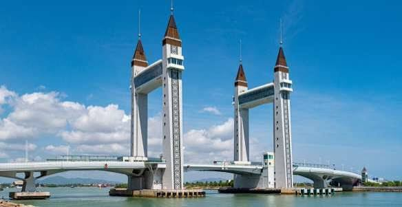

Terengganu terkenal sebagai salah satu destinasi pelancongan paling menarik di Malaysia. Selain pulau yang memukau, Terengganu kini berbangga dengan sebuah mercu tanda moden yang sangat ikonik iaitu Jambatan Angkat Kuala Terengganu atau lebih dikenali sebagai Terengganu Drawbridge. Terletak di muara Sungai Terengganu, jambatan ini menghubungkan bandar Kuala Terengganu dengan Seberang Takir (Kuala Nerus).
